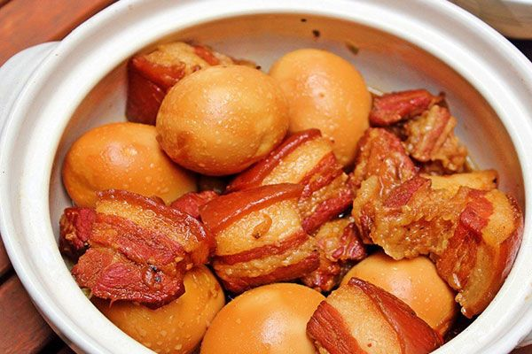

Thit Kho Tau recipe

Thit kho tau aka (Vietnamese Braised Pork) is a soft and tender braised Pork dish containing Pork belly and Eggs that is slow cooked in an extremely flavourful sweet,salty and savoury
broth made from coconut juice and fish sauce and is best served with steamed rice.
Ingredient list(serves 8-12 people)
- 1kg Pork belly
- 1 tsp Shallot
- 1 tsp Garlic
- 1 tsp seasoning powder
- Sugar
- 1/2 cup of Fish sauce
- 600ml Water
- 600ml Coconut juice
- 5 hard boiled eggs
- Cut Pork belly into 1.5-2 inch cubes and add to a large bowl
- Add minced Shallot, garlic, seasoning powder, salt, pepper and mix making sure to evenly coat and season the meat before marinating the meat for at least 30 minutes.
- In a large pot,add a tablespoon of oil and sprinkle about 2-3 Tablespoons sugar to coat the base of the pot and wait for sugar to caramelise into a golden brown colour
over a medium heat and add pork into the pot.
- Make sure to stir the pork in order to coat all the pieces in the caramel and to avoid the caramel from burning, after getting a good sear on the pork or until the pork pieces
are no longer pink, add Coconut juice, Water and Eggs until the Pork and Eggs are barely submerged whilst skimming scum from the pot.
- Add fish sauce and simmer over low heat over 2 hours while occasionaly coming back to skim scum and adjust taste of the broth by adding either water or sugar.
- After 2 hours serve the Pork and eggs with a bit of broth into a seperate bowl or serve with steamed rice(broth can be used a sauce for the rice).